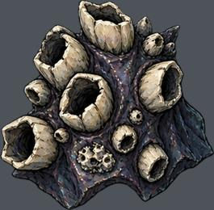
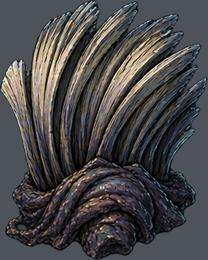
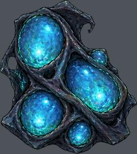
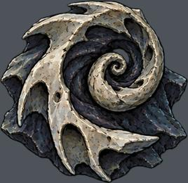
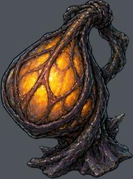
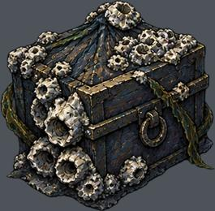
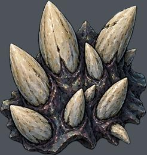
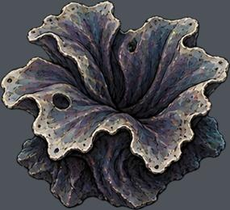
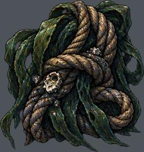
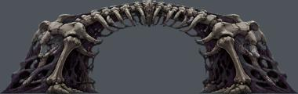

res://assets/biomes/whale/prop-0.png
实例 129；运行画布高度 0.37–1.25 m
尺寸 [380, 373]；透明轮廓 (1, 1, 380, 373)
语义支点、占地、挂点尚需逐图标注下列高度是画布高度，不是实体净高。透明包围盒不等于脚点或占地。

实例 129；运行画布高度 0.37–1.25 m
尺寸 [380, 373]；透明轮廓 (1, 1, 380, 373)
语义支点、占地、挂点尚需逐图标注
实例 119；运行画布高度 0.35–1.25 m
尺寸 [315, 393]；透明轮廓 (1, 0, 314, 392)
语义支点、占地、挂点尚需逐图标注
实例 47；运行画布高度 0.36–6.00 m
尺寸 [346, 388]；透明轮廓 (1, 0, 346, 387)
语义支点、占地、挂点尚需逐图标注
实例 208；运行画布高度 0.36–4.96 m
尺寸 [371, 360]；透明轮廓 (1, 1, 370, 359)
语义支点、占地、挂点尚需逐图标注
实例 36；运行画布高度 0.35–1.25 m
尺寸 [290, 388]；透明轮廓 (1, 1, 289, 387)
语义支点、占地、挂点尚需逐图标注
实例 99；运行画布高度 0.35–1.24 m
尺寸 [385, 378]；透明轮廓 (1, 1, 383, 378)
语义支点、占地、挂点尚需逐图标注
实例 137；运行画布高度 0.35–1.25 m
尺寸 [362, 383]；透明轮廓 (0, 1, 361, 383)
语义支点、占地、挂点尚需逐图标注
实例 510；运行画布高度 0.10–1.25 m
尺寸 [386, 352]；透明轮廓 (1, 1, 386, 352)
语义支点、占地、挂点尚需逐图标注
实例 119；运行画布高度 0.36–1.21 m
尺寸 [377, 398]；透明轮廓 (1, 1, 376, 397)
语义支点、占地、挂点尚需逐图标注
实例 42；运行画布高度 11.91–19.79 m
尺寸 [1000, 317]；透明轮廓 (1, 0, 999, 317)
语义支点、占地、挂点尚需逐图标注